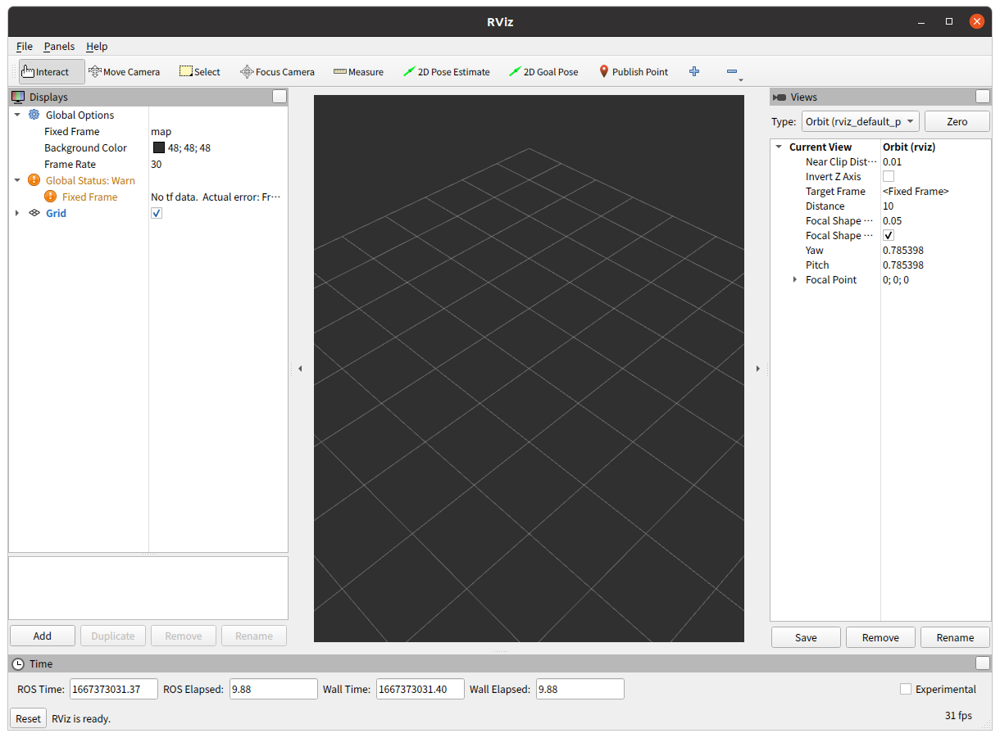
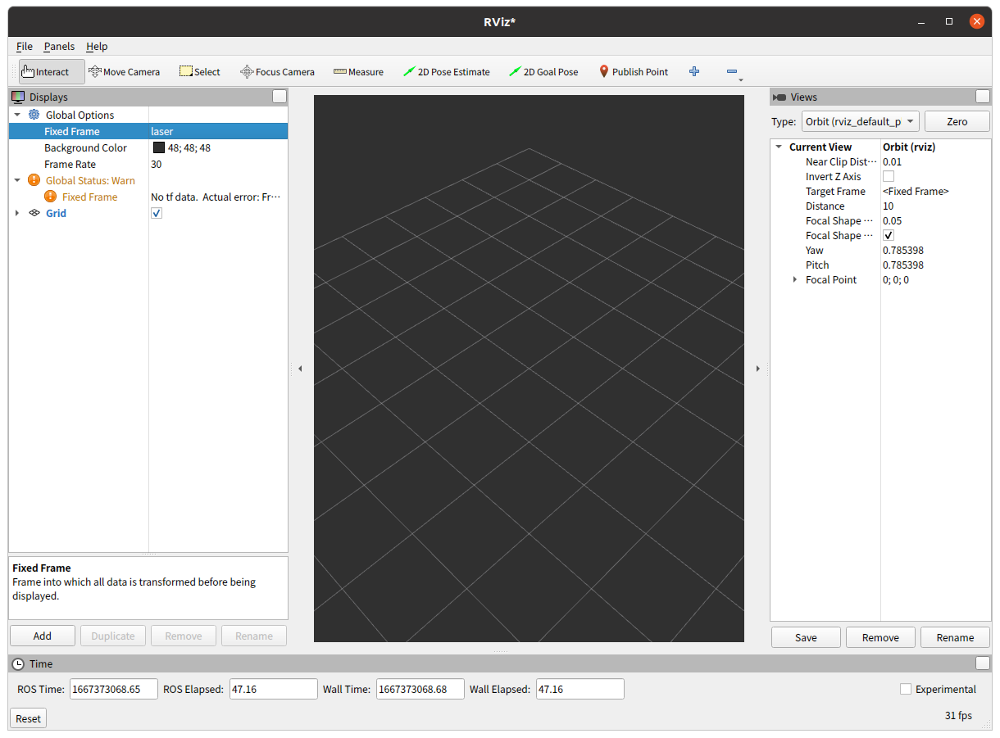
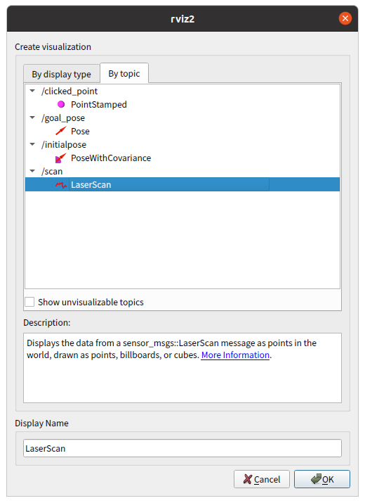
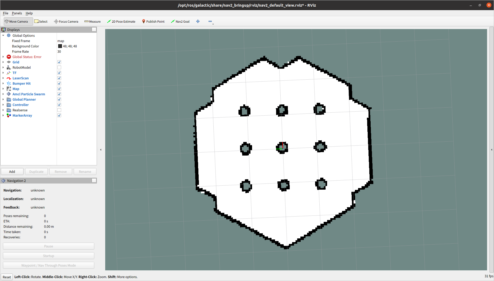
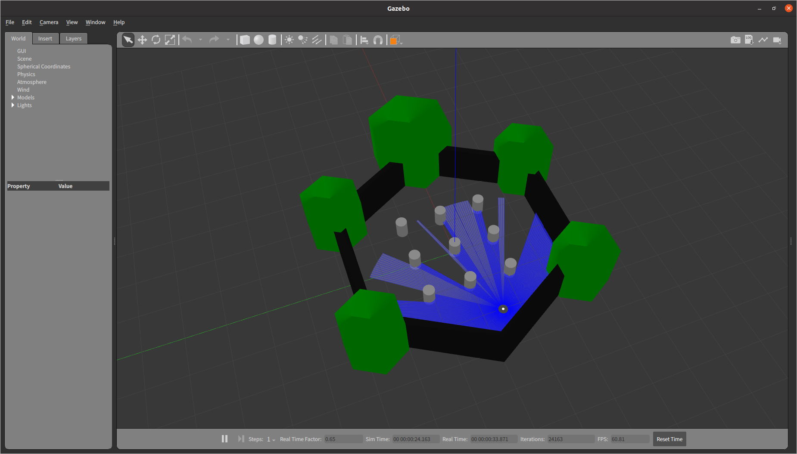
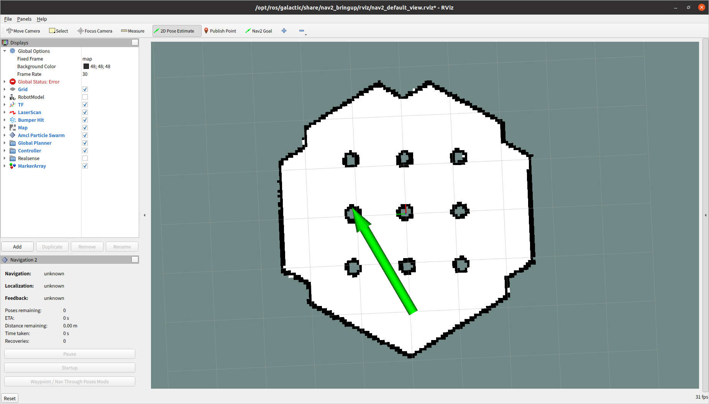
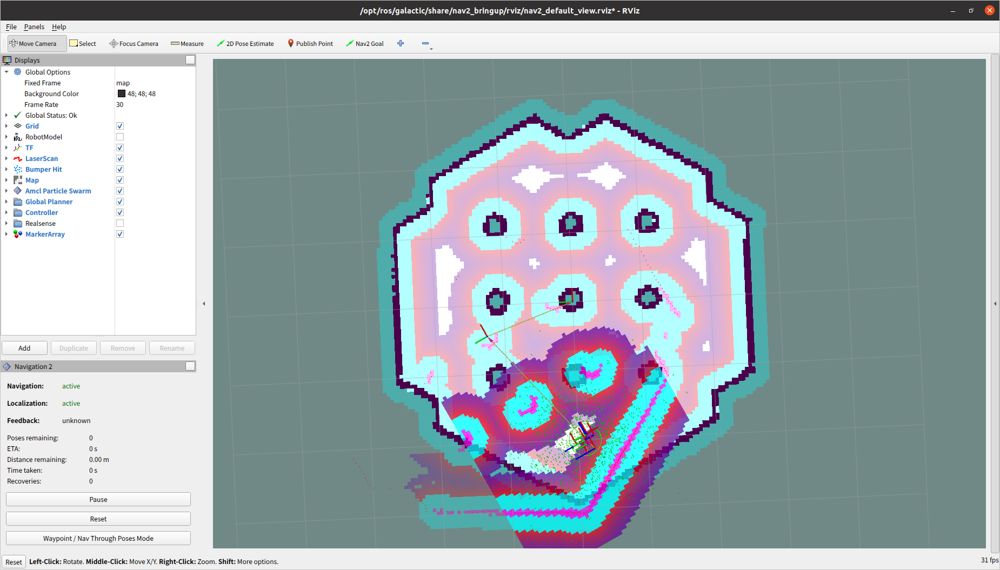
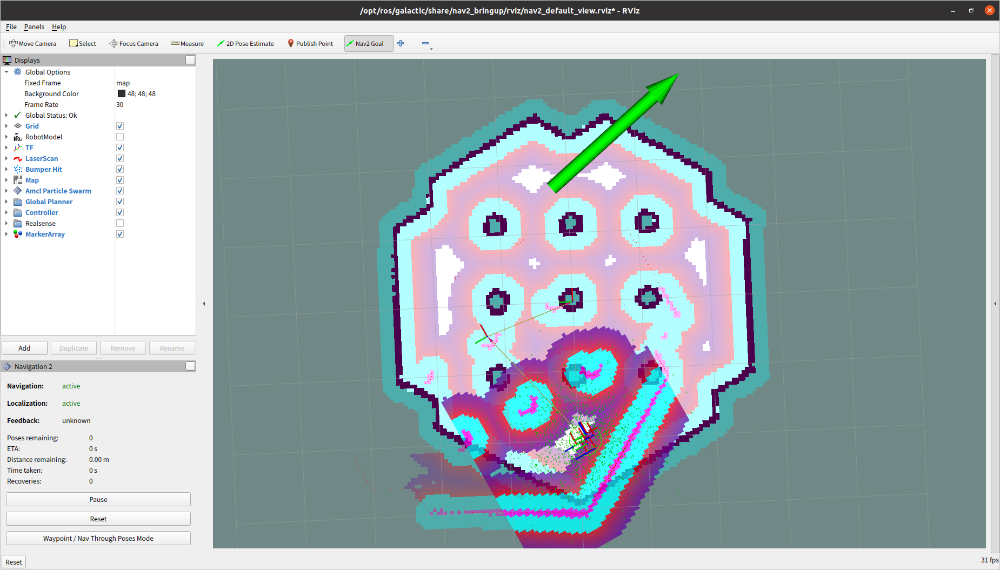
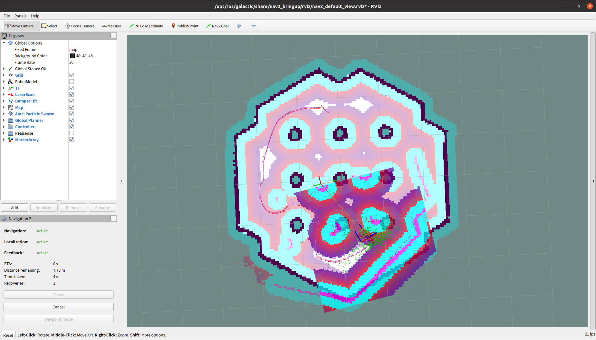
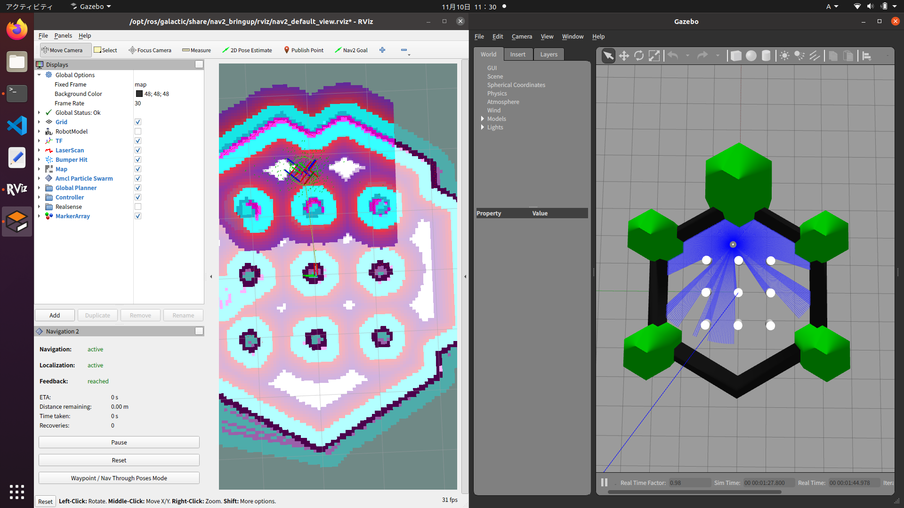

測域センサについて
次のホームページを参考にしました。
urg_node2のソースコードをダウンロードする
ros2_ws/src/にいることを確認。
$ cd ros2_ws/src/ $ git clone --recursive https://github.com/Hokuyo-aut/urg_node2.git
関連するパッケージをインストールする
$ rosdep update $ rosdep install -i --from-paths urg_node2
ビルドする
ros2_ws/にいることを確認。
$ cd .. $ colcon build --symlink-install
センサを接続する
接続を確認して、権限を変更する。
$ ls -l /dev/ttyACM0 crw-rw---- 1 root dialout 166, 0 11月 2 15:51 /dev/ttyACM0 $ sudo chmod 777 /dev/ttyACM0 $ ls -l /dev/ttyACM0 crwxrwxrwx 1 root dialout 166, 0 11月 2 15:51 /dev/ttyACM0
urg_node2を実行する
USBで接続するので、ros2_ws/src/urg_node2/launch/urg_node2.launch.pyを編集する。（36行目）
# パラメータファイルのパス設定
config_file_path = os.path.join(
get_package_share_directory('urg_node2'),
'config',
# 'params_ether.yaml'
'params_serial.yaml'
)
USB接続の設定を変更する場合は、ros2_ws/src/urg_node2/config/params_serial.yamlを編集する。
urg_node2を実行する。
$ cd ~/ros2_ws/ $ . install/setup.bash $ ros2 launch urg_node2 urg_node2.launch.py
トピックを確認する
/scanが測域センサのデータ。
$ ros2 topic list /diagnostics /parameter_events /rosout /scan /urg_node2/transition_event
/scanを確認する
$ ros2 topic echo /scan
header:
stamp:
sec: 1667372852
nanosec: 358815159
frame_id: laser
angle_min: -2.356194496154785
angle_max: 2.0923497676849365
angle_increment: 0.006135923322290182
time_increment: 9.765625145519152e-05
scan_time: 0.10000000149011612
range_min: 0.019999999552965164
range_max: 5.599999904632568
ranges:
- 0.01899999938905239
- 0.01899999938905239
- 0.01899999938905239
・・・・・
rviz2を使って可視化する
$ rviz2



Navigation2のインストールする
Nav2パッケージをインストールする。
sudo apt install ros-galactic-navigation2 sudo apt install ros-galactic-nav2-bringup
Turtlebot3パッケージをインストールする。
sudo apt install ros-galactic-turtlebot3*
Navigation2を実行する
環境変数を設定する。
source /opt/ros/galactic/setup.bash export TURTLEBOT3_MODEL=waffle export GAZEBO_MODEL_PATH=$GAZEBO_MODEL_PATH:/opt/ros/galactic/share/turtlebot3_gazebo/models
Nav2パッケージを実行する。（1回目は起動に時間がかかるのでしばらく待つ）
ros2 launch nav2_bringup tb3_simulation_launch.py headless:=False
Rvizの画面。

Gazeboの画面。

シミュレーション環境でナビゲーションしてみる
[2D Pose Estimate]ボタンをクリック。Map上で、スタート時のロボットの位置と方向を決める。

センサと地図を比較しているみたい。

[Nav2 Goal]ボタンをクリック。Map上で、ゴール時のロボットの位置と方向を決める。

走りながら経路を計算している。

目的地に着いたところ。

地図を作る
Zumoでナビゲーションしてみる